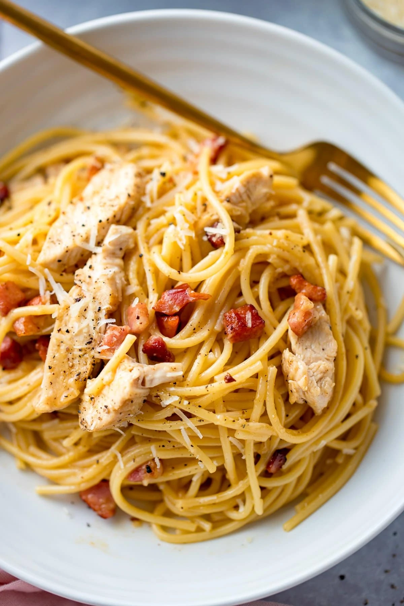

Creamy Chicken Carbonara

Description
My Chicken Carbonara has tender chicken, crispy pancetta and spaghetti all tossed together in a rich, silky sauce.
No cream is needed to get that thick creamy sauce. I’ll show you how to ensure the egg doesn’t scramble too.
A fantastic version of the classic carbonara – so great for date night!
Ingredients
- Olive oil and butter
- Chicken breast
- Salt and pepper
- Dried spaghetti
- 3 large eggs
- Pecorino Romano Cheese
- Pancetta
Directions
- Slice the chicken in half, season and fry in a little oil. Then remove from the pan and slice into strips.
- Cook the spaghetti in a large pan of lightly salted boiling water.
- Mix together the eggs with Pecorino and Parmesan cheese.
- Fry the pancetta in a little butter, then add the garlic.
- Transfer the pasta straight from the water to the pan with the pancetta and add in a good splash of the pasta water and the cooked chicken. Turn off the heat.
- Add the egg mixture in a stream whilst lifting and lowering the pasta with tongs – until fully combined.
- Divide between bowls and sprinkle on Parmesan and black pepper before serving.